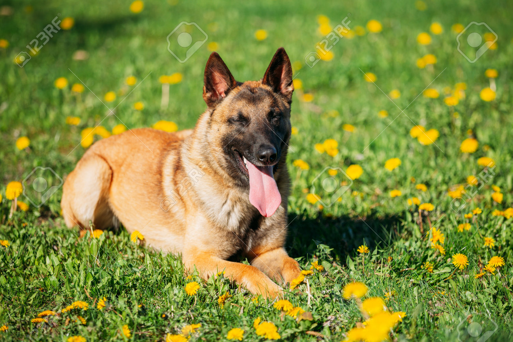
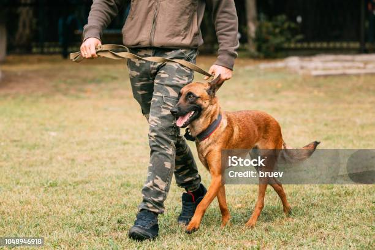
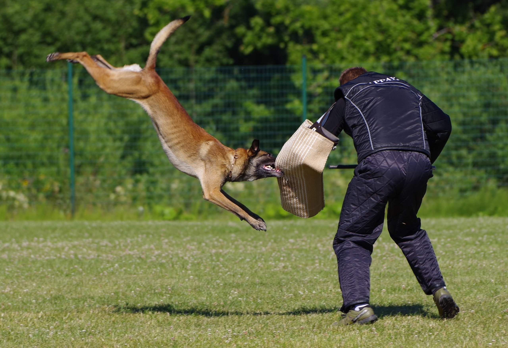

Enfocado en la obediencia fundamental para garantizar una convivencia equilibrada entre el perro y su guía.

Se trabaja el control en situaciones complejas, obediencia a distancia y mayor disciplina. Perfecto para perros con base previa que necesitan mejorar su rendimiento.

Entrenamiento especializado en defensa y protección, siempre bajo control profesional. Se desarrolla el instinto de guarda de forma segura y equilibrada.